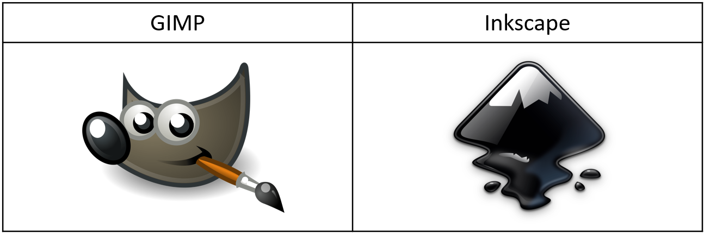

Computer Aided Design
2D raster
Raster graphics are bitmaps. A bitmap is a grid of individual pixels that collectively compose an image. In computer graphics, raster images are a collection of countless tiny squares. Each square/pixel is coded in a specific shade/hue. They are then arranged in a grid formation to form an image. When viewed as a whole, the colored pixels make up a detailed image. Raster graphics are best used for non-line art images. Specifically digitised photographs, scanned artwork, and detailed graphics. Non-line art images are best represented in raster form as those includes subtle chromatic gradations, undefined lines and shapes, and complex composition. High resolution raster files are significantly larger than low resolution raster files.
2D vector
Vector graphics are based on mathematical formulas that define geometric primitives such as polygons, lines, curves, circles and rectangles. Vector graphics are best used to represent a more structured image, like line art graphics with flat, uniform colors. The formulas that govern the rendering of vector images apply identically to graphics of any size. Since it is not a pixel-based image, zooming in and out of a vector image will always be sharp/clear.
Here's a comparison between a rastor and vector image:

2D CAD Softwares I am using:
GIMP
GIMP is a free photo editing/graphic design software similar to Photoshop. It is mainly a raster graphics program. Now, I will be showing an example on removing the background from an image, and then adding it on top of another image.
These are the images I will be using:
1. After downloading the GIMP software, open the image you want to cutout.
2. Go to Layer > Scale Layer > resize the image however you want.
3. Next, go to Layer > Transparency > Add Alpha Channel.
4. Click on the Free Select Tool as shown.
5. Outline the object from the image you want to cutout (make sure to connect the first and last point together).
6. After outlining the object, go to Select > Invert.
7. Next, go to Edit > Clear. Alternatively, press Ctrl + x.
8. Everything will disappear except for the object you outlined. Optional: use the Smudge Tool to make the cutout edges look more natural.
9. Lastly, go to File > Open as Layers > choose a new background image.
10. Make sure to order the images correctly, as shown on page 10.
Here's the final image after exporting it as a .jpg file:
Inkscape
Inkscape is an open-source vector graphics editor similar to Adobe Illustrator. Professional designers around the world use Inkscape to keep costs low and produce high-quality designs. Now, I will be showing how I create a double exposure logos using Inkscape. It is a technique to create an optical illusion in which 2 objects are exposed at once.
These are the images I will be using:
1. After downloading the Inkscape software, go to View > Zoom > Zoom to 1:1. And select Custom.
2. Click on Align and distribute objects as shown on page 2. A bar at the right would pop out, change Relative to: Last selected.
3. Click on the Edit objects colors, gradients, arrowheads, and other fill and stroke properties' icon.
4. Import the 2 images.
5. Select Image rendering mode: None.
6. After importing the images, press Shift + Alt + B. Trace Bitmap would appear. This feature helps to outline images that have complicated outlines. Select the image and apply.
7. I am changing the colour for both images as it is easier to edit on.
8. I will be decreasing the opaque value for the wolf image as it will be easier to look at.
9. Move the wolf image onto the forest image.
10. Click on Draw Bezier curves and straight lines icon. Draw around the forest image (the part you want to keep). Make sure to connect the first and last points together.
11. Select the wolf image and the shape you drawn. Go to Path > Union (this combines the both parts together).
12. Select the remaining 2 images and go to Path > Intersection.
13. And we are done! I have also changed the colour of the final image.
Here's the final image after exporting it is as a .png file:
Fusion 360
Fusion 360 is a cloud-based 3D modeling, CAD, CAM, and PCB software platform for product design and manufacturing. It lets engineers to explore the physical aspects of a design without surrendering to physical limitations. Fusion 360 allows multiple people to work on a model at the same time.
Click here to access simple exercises for beginners.
Here's a quick guide on creating a 3D model:
1. Extrusion:
1. Slide 1 shows what 3D model I will be making. We will follow the given dimensions.
2. After downloading the Autodesk Fusion 360 software, go to Create Sketch and choose the XY plane.
3. Click on 2-Point Rectangle to create the base. After creating the base, click FINISH SKETCH.
4. Next, extrude the base. There is a bar at the right. Direction: One Side means that the model is only extruded at one side. Distance: 20mm is how high we want it to be. Taper Angle means the change of angle from bottom to top of the extrusion.
5. Turn the model to the other side. Click on the side as shown and then right click. Click on Sketch.
6. Slide 6 shows how I created the rest of the model.
7. Lastly, extrude. Distance: -20mm as the extrusion is on other side, the value is negative.
8. And we are done!
2. Revolve:
1. Let's insert an image for reference. Go to INSERT > Canvas > insert the image from your computer.
2. Create a half sketch and make an outline of the image with Line, Centre Diameter Circle and Fit Point Splint. When done, click FINISH SKETCH.
3. Next, click on Revolve. There is a bar at the right. Angle: 360.0 deg is how much we want the model to revolve around. Direction: One Side means that the model is only extruded at one side. The reason why we drew a half sketch and not a full sketch is because the model would need a middle line to know where it will be revolving around.
4. Click on the eye to make the image we inserted invincible.
5. I am using the Fillet feature to make my model look nicer.
6. Next, I will change the colour of the model. Go to Modify > Appearance.
7. A bar at the right would pop out. Scroll down and find your desired colour. Drag and drop the colour you chose onto the model.
8. And we are done!
3. Lofting & Sectional Analysis:
1. Let's start by creating a sketch on the XY plane.
2. I will be creating a circle.
3. Next, go to CONSTRUCT > Offset Plane.
4. Click on the XY plane to adjust the new plane's height from the original XY plane.
5. Create a new sketch with the new plane. The sketch I created was a circle.
6. I have created a few more planes as well as circles. Then, go to CREATE > Loft.
7. Click on all 4 sketches to connect up the model. And that is lofting.
8. Now, click on Shell to make the model hollow.
9. To check whether the model is hollow, go to INSPECT > Sectional Analysis.
10. Click on the XZ plane.
11. Indeed, the model is hollow.